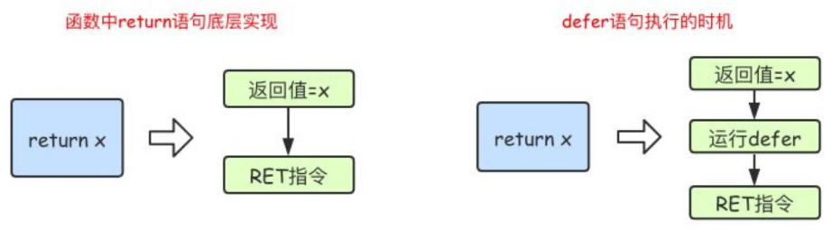
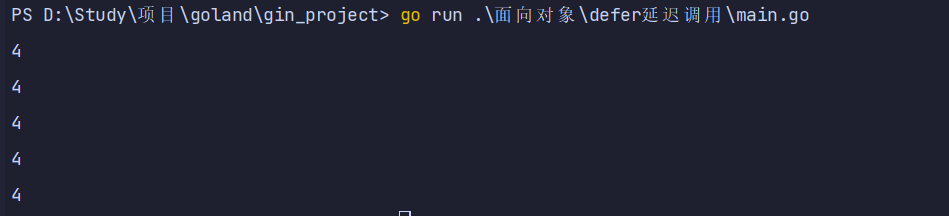

defer延时调用
1. defer介绍
1.1. defer特性
- 1.关键字defer用于注册延迟调用。
- 2.这些调用直到return前才被执。因此，可以用来做资源清理。
- 3.多个defer语句，按先进后出的方式执行。
- 4.defer语句中的变量，在defer声明时就决定了。
1.2. defer用途
- 1.关闭文件句柄
- 2.锁资源释放
- 3.数据库连接释放
1.3. defer语句使用说明
- defer实现类似于栈，先进后出
- 而且是在函数执行完成到return返回之间调用
package main
import "fmt"
func main() {
fmt.Println("start")
defer fmt.Println(1)
defer fmt.Println(2)
defer fmt.Println(3)
fmt.Println("end")
}
1.4. defer 执行时机
- 在 Go 语言的函数中 return 语句在底层并不是原子操作，它分为给返回值赋值和 RET 指令两步。
- 而 defer 语句执行的时机就在返回值赋值操作后，RET 指令执行前。
- 具体如下图所示：

1.5. defer案例
- defer 注册要延迟执行的函数时该函数所有的参数都需要确定其值
package main
import "fmt"
func calc(index string, a, b int) int {
ret := a + b
fmt.Println(index, a, b, ret)
return ret
}
func main() {
var x, y int
defer calc("AA", x, calc("A", x, y))
x = 10
defer calc("BB", x, calc("B", x, y))
y = 10
}
2. defer陷阱
2.1. defer 碰上闭包
- 也就是说函数正常执行,由于闭包用到的变量 i 在执行的时候已经变成4,所以输出全都是4
package main
import "fmt"
func main() {
var whatever [5]struct{}
for i := range whatever {
defer func() {
fmt.Println(i)
}()
}
}
